Ração para gatos adultos
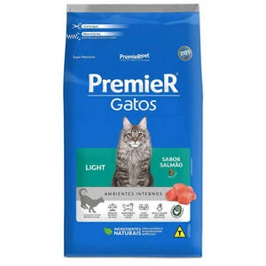
Ração formulada para gatos adultos que precisam de controle de peso, com ingredientes de alta digestibilidade e baixo teor de gordura.
R$79,90
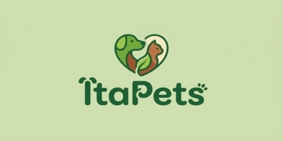

Ração formulada para gatos adultos que precisam de controle de peso, com ingredientes de alta digestibilidade e baixo teor de gordura.
R$79,90
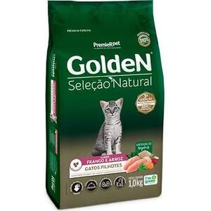
Ração formulada para gatos filhotes, com ingredientes de alta digestibilidade e baixo teor de gordura.
R$97,00

Ração formulada para gatos castrados, com ingredientes de alta digestibilidade e baixo teor de gordura.
R$109,90
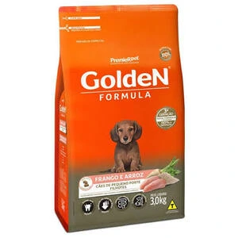
Ração formulada para cães de pequeno porte, com ingredientes de alta digestibilidade e baixo teor de gordura.
R$78,90
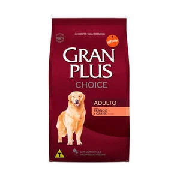
Ração formulada para cães adultos, com ingredientes de alta digestibilidade e baixo teor de gordura.
R$79,90
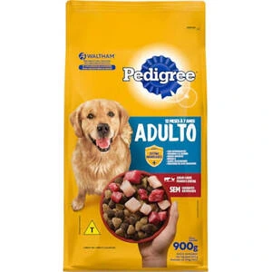
Ração formulada para cães filhotes, com ingredientes de alta digestibilidade e baixo teor de gordura.
R$39,90
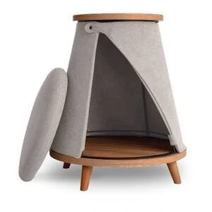
Cama confortável para pets de pequeno porte.
R$49,90
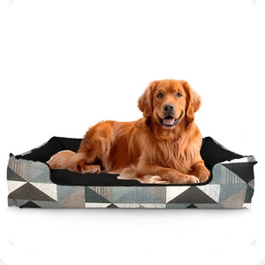
Cama impermeável para pets de médio porte.
R$99,90
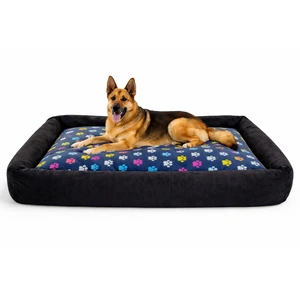
Cama premium para pets de grande porte.
R$119,90
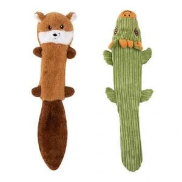
Brinquedo de pelúcia para gatos, feito de poliéster, ideal para diversão e entretenimento.
R$17,90
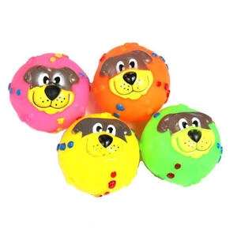
Brinquedo em forma de bola com cara de cachorro, feito de material resistente e seguro para pets.
R$34,90
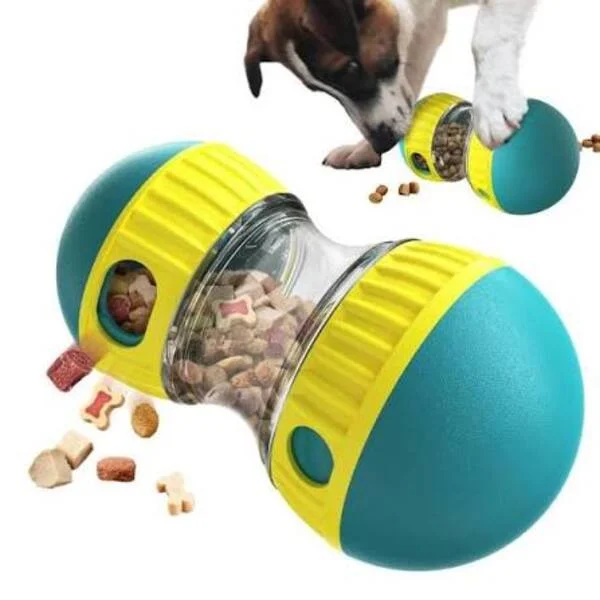
Brinquedo interativo com compartimento para ração, estimulando a mente e o corpo do seu pet.
R$57,90
Na ItaPets, entendemos que seus animais de estimação são membros da família e merecem o melhor cuidado possível. É por isso que nos dedicamos a oferecer uma ampla variedade de produtos de alta qualidade para cães, gatos e outros animais de estimação.
Entre em contato conosco e descubra por que somos a escolha certa para o bem-estar do seu pet!
Entre em contato